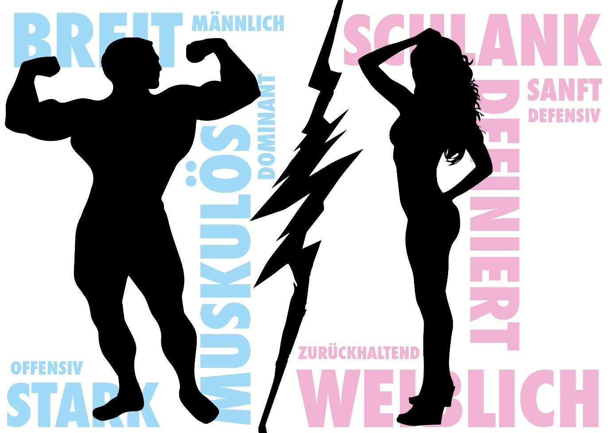

Wenn Pia heute ins Fitnessstudio geht, weiß sie genau, was ansteht, denn heute steht das gleiche an wie jeden Montag, Mittwoch und Freitag. Pia macht das Gleiche wie viele andere Frauen. Sie macht das, was Sandra, Petra und Eva auch machen: Bauch, Beine und Po trainieren. Außer samstags. Samstags geht Pia manchmal auch in einen Kurs: Step Aerobic. Warum? Na, weil sie eine Frau ist! Genauso, wie Basti abwechselnd Brust und Arme trainiert. Warum? Na, weil er ein Mann ist. Ganz einfach.
So unterschiedlich das Training von Pia und Basti zu sein scheint, so haben beide doch etwas gemein: Geschlechterstereotype. Der Duden definiert sie als „Vorurteile“ und „klischeehafte Bilder“, in diesem Fall über Frauen und Männer. Doch manchmal sind Stereotype eben nicht nur Vorurteile, sondern beschreiben zutreffend Verhaltensweisen, die sich beobachten lassen. Fitnessstudios stellen in diesem Kontext einen Mikrokosmos dar, der durch ein interessantes Paradoxon gekennzeichnet ist: Einerseits sind Geschlechterstereotype hier besonders offensichtlich, andererseits werden in Fitnessstudios neue Körpertypen und Identitäten geschaffen. Hier sieht man den Pumper, der jeden Tag nur Brust und Bizeps trainiert, direkt neben der Frau, die eben nicht nur Bauch, Beine und Po formt, sondern schwere Gewichte stemmt, und von dem, was als „typisch weiblich“ gilt, abweicht.
Die interessanten Fragen hierbei lauten: Welche Ansichten, Vorstellungen und Werte beeinflussen Personen in ihrem Trainingsverhalten? Woher kommen diese und wie zeigen sie sich schließlich zwischen Menschen? Ach ja, und warum sind Geschlechterstereotype gerade in Fitnessstudios so anschaulich?
Schlank oder Muskulös?
Fitness ist heute im Leben vieler Menschen nicht mehr wegzudenken. Gerade soziale Medien wie Youtube und Instagram, in denen der „Fitness-Lifestyle“ propagiert wird, treiben diesen Trend voran. Während manche anderen beim Ausleben desselben nur zusehen, geht laut dem Statistischen Bundesamt heutzutage fast ein Drittel aller Männer und knapp jede vierte Frau in Deutschland in ein Fitnessstudio. Tolle Sache! Detlef D! Soost muss niemanden mehr sexy machen, weil wir es alle schon sind. Zumindest alle Frauen, denn Männer machen ja die Bosstransformation von Rapper Kollegah. Genau hier zeigen sich Geschlechterstereotype. Solche Programme sind entweder für Frauen oder Männer gemacht. Was für wen ist, dürfte nicht schwer zu erraten sein. Schließlich wird sich kaum eine Frau zum Boss – pardon, zur Bossin – transformieren und die wenigsten Männer sich durch ein „Power-Abnehm-Programm“ sexy machen lassen. Warum? Weil das nicht weiblich oder nicht männlich wäre.
Um herauszufinden, wie sich Geschlechterstereotype auch in Fitnessstudios zeigen, habe ich Beobachtungen und Interviews in verschiedenen Fitnessstudios durchgeführt. Deshalb verschiedene, weil das Konzept eines reinen Frauenstudios ein ganz anderes ist als das eines McFits. Das wirkt sich wiederum darauf aus, wer dort trainiert und wie trainiert wird. Widmen wir uns also dem, was ich beobachtet habe und vor allem dem, was die Personen, die sich regelmäßig in Fitnessstudios aufhalten, zu sagen haben
„Hier hast du nichts zu suchen“
Das ist keine Floskel, keine Übertreibung. Stattdessen sagt einer der Trainer genau diesen Satz gerne zu Frauen, wenn er sie zum ersten Mal durch die heiligen Hallen – auch bekannt als Freihantelbereich – des Studios führt. Der Bereich, in dem nur die harten Kerle und die, die es gerne wären, trainieren.
Fitnessstudios heißen typischerweise Frauen wie Männer willkommen, jedoch herrscht eine klare Raumverteilung. Demnach wird vor allem der Freihantelbereich als männlicher Kompetenzbereich verstanden. Alle Geräte und Übungen, die Bauch, Beine und Po trainieren, werden hingegen dem weiblichen Geschlecht zugeschrieben. Im Soziologenjargon spricht man hier auch von weiblich und männlich konnotierten Sphären oder, da wir alle Anglizismen lieben, von „gendered spaces“.
Definition von „gendered spaces“
Der Begriff gendered spaces klingt abstrakt, bezeichnet jedoch etwas, dass uns im Alltag nicht fremd ist. Der Soziologe Thomas Johansson definierte diese in seinem 1996 erschienen Aufsatz als all diejenigen Orte, an denen „it is possible to distinguish between typical male and female territories“. Es geht also um weibliche und männliche Areale. In unserer Vorstellung einer Wohnung mag die Küche eher mit einer Frau und das Büro eher mit einem Mann assoziiert sein. In Bezug auf Fitnessstudios, so Johansson, gilt der Bereich, in dem sich die Gewichte befinden, als Männerdomäne und der Kursbereich als Frauendomäne.
Doch woher kommt das? Einer der Gründe ist, dass Übungen, die nicht an geführten Geräten, sondern entweder frei oder an Kraftstationen durchgeführt werden, mit einer höheren Komplexität verbunden sind und mehr Wissen erfordern. Technisches Know-how wiederum wird mit Männern assoziiert. Anders formuliert: Frauen und Technik! Das trägt schließlich dazu bei, dass Frauen Angst haben, sich vor den Männern zu blamieren und mitunter bei den Trainerinnen und Trainern den Wunsch nach einfacheren Übungen äußern.
Ein weiterer Grund für die Abwesenheit vieler Frauen im Freihantelbereich findet sich in deren Sexualisierung und Objektivierung durch manche Männer. Die weiblichen Interviewten erzählten in Interviews von Situationen, in denen sie von Männern „angestarrt“ und „begafft“ wurden. Im gemeinsamen Probetraining mit meiner Freundin in einem McFit-Studio durfte ich selbst Zeuge dessen werden. In gut gemeinter Absicht wurde meine Freundin von einem Mann darauf hingewiesen, sie solle doch in Zukunft lieber auf enge Sportleggings verzichten, wenn sie beim Training nicht ständig von Männern beobachtet werden möchte – vor allem, wenn sie dort trainiert, wo ansonsten nur Männer sind: im Freihantelbereich. Solche Erfahrungen verstärken das Gefühl, zum Betrachtungsgegenstand degradiert zu werden und schrecken einige Frauen gänzlich davon ab, sich in einem Fitnessstudio anzumelden.
Frauen ganz allein, ist da was anders? Nein!
 „Frauen, traut euch!“ – diesen Appell sollten sich doch gerade Frauenfitnessstudios auf die Fahne schreiben. Aber dem ist nicht so. Auch hier halten sich Geschlechterstereotype hartnäckig: Eine ehemalige Mitarbeiterin eines solchen Studios berichtete darüber, dass Frauen dort fast ausschließlich Bauch, Beine und Po trainieren. Mitunter, weil ihnen gar keine andere Möglichkeit bleibt. Weil sie ja „auf die speziellen Bedürfnisse von Frauen ausgerichtet“ (Zitat einer Studiowebsite) sind, bieten viele Frauenstudios entweder einen winzig kleinen oder gar keinen Freihantel- und typischen Kraftbereich. Im Gegenzug finden sich dort jedoch massenhaft „Problemzonengeräte“, die auch das letzte Fettpölsterchen am Oberschenkel beseitigen sollen. So werden die Ziele von Frauen schon vorab auf „Abnehmen“ und „Körperstraffung“ begrenzt. Ein Ausbrechen aus stereotypen Wünschen ist nicht vorgesehen.
„Was ist das denn für ′ne Schwuchtel?“
Am Beispiel von Fitnesskursen zeigt sich, wie unterschiedlich und doch beiderseits drastisch Frauen und Männer mit Personen umgehen, die nicht gängigen Vorstellungen entsprechen. Eine Mitarbeiterin erklärt hierzu: „Ich hab‘ auch die Erfahrung gemacht, dass Männer oft, wenn die dann sehen ‘Ah, der geht in den Step Aerobic-Kurs‘ direkt sagen ‘Was ist das denn für ‘ne Schwuchtel?’“. Männer sind also sehr direkt in ihrer Kritik, indem sie dieses Verhalten als unmännlich abstempeln. Frauen nehmen in Bezug auf andere Frauen, die schwere Gewichte stemmen oder auch mal mehr als 10 Minuten mit Oberkörpertraining verbringen, mitunter eine ähnliche Abwertung vor. Jedoch geschieht dies auf eine indirektere Art und Weise. Getuschel in der Umkleide und verstecktes Kichern scheinen hier beliebte Reaktionen zu sein. Das ist ja langweilig, könnte man jetzt sagen. Aber zum Glück gibt es ja noch Männer, die mit Phrasen wie „Was willst du denn im Freihantelbereich? Du musst Arsch trainieren. Mehr hast du nicht zu trainieren!“ für Aufruhr sorgen. Der Soziologe Michael Meuser sieht in solchem Verhalten eine Instrumentalisierung der Frauen durch die Männer. Deren Ziel hierbei ist, sich ihrer eigenen Männlichkeit zu versichern, indem sie sich wie „Machos“ aufführen. Auf der Seite der Frauen stellt Neid ein verbreitetes Motiv der Herabwürdigung in Fitnessstudios dar. Auch und gerade unter Frauen herrscht oftmals Konkurrenzdenken, das in Neid enden und statt zur gegenseitigen Motivation zur Abwertung der anderen Person führen kann. Sowohl Frauen als auch Männer nutzen also Herabwürdigung zur Erhöhung der eigenen Person. Sie tun dies jedoch auf unterschiedliche Art und Weise. Und meist ungleich unverschämt.
Verändert, aber (noch) nicht anders
In Fitnessstudios herrschen noch immer klare Vorstellungen davon, wie eine Frau, beziehungsweise ein Mann auszusehen und zu trainieren hat. Interessanterweise auch in Frauenfitnessstudios, die verschiedene Ausprägungen von Weiblichkeit ebenso limitieren wie gemischte Studios. Abweichungen von geltenden Vorstellungen werden oftmals negativ bewertet und das Geschlecht der anderen Person zur Bestätigung des eigenen Geschlechts in Zweifel gezogen. Der Schriftsteller Ferdinand von Saar lag mit seinem Zitat „Sich selbst erkennen heißt, sich selbst vernichten“ gänzlich daneben, denn hier wird der Andere vernichtet, um sich selbst zu erkennen.
Definition von „Influencer“
Als Influencer werden Meinungsführer bezeichnet, „die mit möglichst hoher Reichweite Produkte und/ oder Markenbotschaften verbreiten und fester Bestandteil erfolgreicher Kommunikationsstrategien sind“, so Lina Klespe, die sich in einer Agentur mit digitaler Kommunikation beschäftigt. Influencer agieren dabei vor allem auf Social-Media-Plattformen wie Youtube und Instagram, schreibt Klespe weiter. Gerade Fitness-Youtuber bewerben eben nicht nur verschiedene Produkte im Bereich der Ernährung oder Bekleidung, sondern auch ihren eigenen Körper. Durch deren enorme Reichweite können Influencer so auch geltende Normvorstellungen und Schönheitsideale beeinflussen.
Fitnessstudios bieten jedoch nicht nur Raum für Stereotype, sondern auch für die Schaffung neuer Formen von Weiblichkeit. Soziale Medien und „Influencer“ wie Sophia Thiel oder Pamela Reif spielen hierbei eine wichtige Rolle, weil sie einen fitten und sportlichen – und nicht mehr nur schlanken – Körper bewerben und sich für die Vereinbarkeit von Weiblichkeit und Muskeln einsetzen. Frauen wie Pia, die bisher nur Bauch, Beine und Po trainiert haben, wagen sich nun vielleicht auch an andere Geräte heran. Dadurch entsteht im weiblichen Kosmos eine Enttabuisierung von Muskulösität. Auch unter Männern entwickelt sich eine zunehmende Akzeptanz dieser alternativen Weiblichkeit. Diese spiegelt sich auch in zahlreichen Interviews wieder, in denen betont wird, dass sich das Training von Frauen in den letzten Jahren stark verändert hat und „Frauen, die Krafttraining machen, mittlerweile als normal betrachtet“ werden, so eine Mitarbeiterin. Andererseits zeigen Fitnessstudios eindrucksvoll, dass für alternative Männlichkeiten (noch) kein Platz zu sein scheint. Muskeln als Symbol für Männlichkeit sind gerade in der westlichen Kultur stark verankert und verbannen sowohl unmuskulöse Männer als auch muskulöse Frauen aus dem Bereich des Wünschenswerten. Ein Bild, das Muskeln und Weiblichkeit als unvereinbar betrachtet, prägt so noch immer die gesellschaftliche Wahrnehmung. Beispiel gefällig? Das Nomen „Muskulösität“ wird von Microsoft Word als falsch markiert. Als erster Korrekturvorschlag wird „Maskulinität“ angegeben.